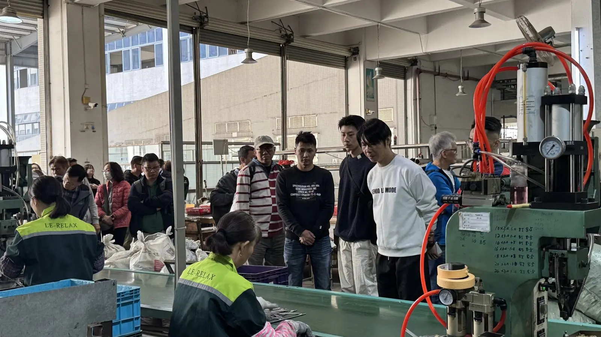
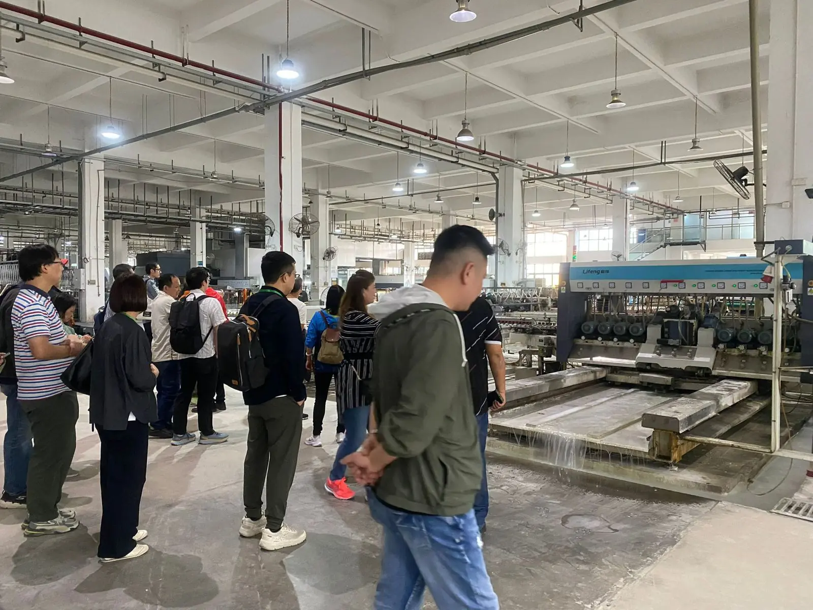
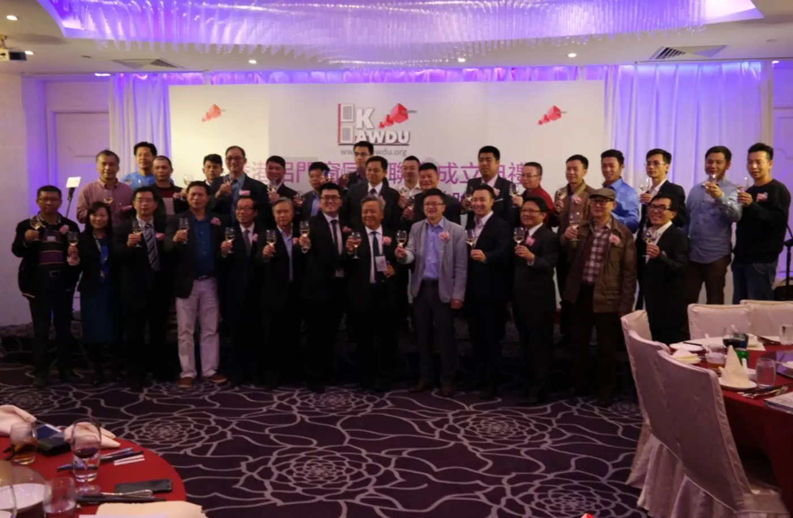

Replacing aluminium windows? Start with an HKAWDA member.
HKAWDA brings together aluminium window, door and glazing contractors across Hong Kong. We publish a trusted member directory and a homeowner guide, and work with government on clear standards for the trade.
Three steps to replacing your windows
Know the rules
In Hong Kong, replacing a window is usually a 'minor works' item that must be carried out by a contractor registered with the Buildings Department. Buildings served a Mandatory Window Inspection notice have extra steps.
Minor works & MWIS →Choose a member
Search the directory by district, compare at least two or three written quotations, and look for the HKAWDA member sticker at the shop.
Browse the directory →Check and maintain
On completion, check the work against the quotation, keep the warranty and copies of Buildings Department submissions, and inspect hinges, rivets and latches regularly.
Handover checklist →Look for the HKAWDA mark
- ✓Certified sticker on the shopfront
Every member firm receives a certified glass sticker and a numbered membership card.
- ✓A voice for the trade with government
The Association raised processing times with the Buildings Department, which later introduced a window-inspection card to identify qualified window professionals.
- ✓Ongoing training
Courses with IVE (VTC) on window installation, maintenance and inspection schemes.
- ✓Legal and professional support
Members facing licensing issues can get advice from the Association's legal adviser.
“A voice for the trade, a service to the public.”
Founding President Lee Siu-po · Ta Kung Pao newspaper, 2015
認可會員
Seen this mark? Type the company name or phone number to check membership.
Members across Hong Kong
Latest from the Association

Aluminium window & glass factory tour
Site visits to window and glass factories to share the latest trends and processing techniques.

Zhongshan factory visit
Nearly fifty members toured aluminium window and glass production lines.

Founding ceremony
Close to a hundred guests marked the Association's founding, covered by the Ta Kung Pao newspaper.
Affiliated association of the Kowloon Chamber of Commerce
HKAWDA is recognised by the Kowloon Chamber of Commerce as an affiliated association.